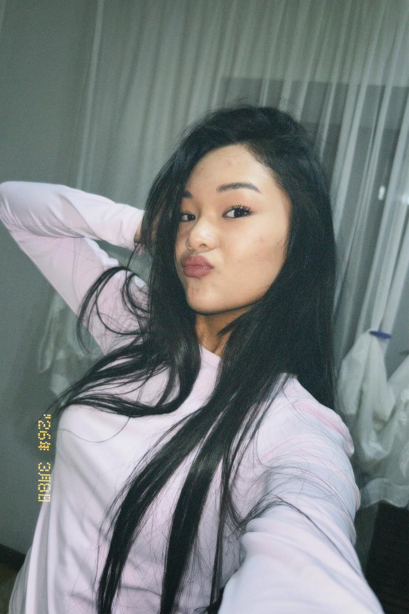

Дорогая Мусик
Я хз когда ты это читаешь, вообще я сказал 30 апреля, что посмотришь где-то в июне. Но все-таки мне кажется, что читаешь раньше. За два блядских года так и смог поймать общую волну с тобой, хотя обычно с другими это получается намного легче. Как я МОЖЕТ сказал раньше, после того как ты прочитаешь все эту ебату, я не смогу смотреть тебе в глаза, потому что ильяс очко жим жим.
Сколько бы раз я в тебе не разочаровывался, я постоянно возвращался к тебе. Сколько бы я не убеждался, что эту грешную душу стоит отпустить и забыть, я абсолютно всегда мысленно возвращался к даме по бокам экрана.
Я даже не знаю почему полюбил тебя. Может сначала было и не понятно, что ты мне нравишься, но нравилась ты мне с самого начала включая первые дни сентября 2024 года. И с тех пор, ты постоянно шла в разрез с моим представлением хорошего ученика, примерной дочери и рациональным мышлением.
Хотя я вру, я знаю почему любил. Я люблю твои глаза, твою улыбку, твою фигуру, как ты стесняешься, как ты запинаешься, и как не можешь долго держать зрительный контакт. Казалось бы, что такое есть у любой, но почему-то зацепили эти вещи именно у тебя.
И именно поэтому ужасно стеснялся, в 10 классе весной пока у нас был урок в младшем корпусе я пришел позже всех и свободное место было только рядом с тобой. От стеснения я не просидел и минуты и просто сьебался как мужчина.
Я очень сильно ревновал, когда ты советовалась со мной на счет козлоеба арсена. Я и так был без ума от тебя, а ты все затирала про какого-то овоща без будущего у которого есть только деньги отца.
Я очень сильно ревновал, когда ты контактировала с адылжаном или хакимом. А когда ты сама рассказала, что обнималась с хакимом, потому что “чувства вспыхнули”, меня как будто вывернули и завернули обратно. На самом деле до сих пор противно и ревниво вспоминать эту поеботину.
Ты правда очень красивая и умная, Карина. Поэтому займись собой и своим окружением, эти лицемерные, меркантильные, узко мыслящие люди не стоят твоего потенциала, жан.
Короче, вот все мои мысли на момент первого мая, чувствую что за оставшееся время я только больше разочаруюсь в тебе, но тем не менее спасибо что занимала мою голову два года.
И ну конечно, когда ты прочитаешь это, я вряд ли с тобой заговорю еще раз и вряд ли еще раз посмотрю в глаза.